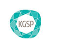
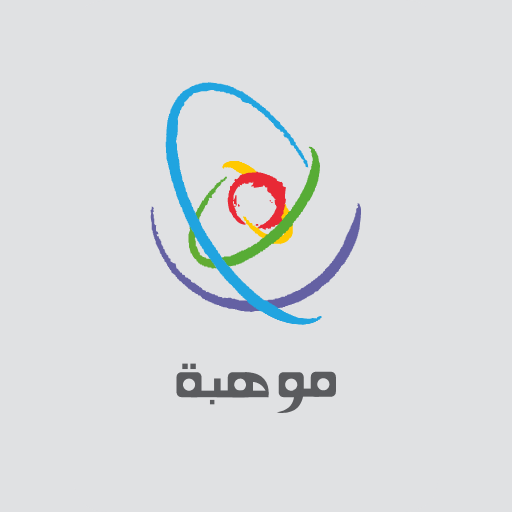

Awards

Recipient – KAUST Gifted Student Program (KGSP) Scholarship
August 2019 – Present
KGSP is a prestigious scholarship awarded by the King Abdullah University of Science & Technology (KAUST) a select group of Saudi students, allowing them to pursue undergraduate degrees in STEM fields in the US, and return to KAUST to complete their graduate studies.
Image source: https://kgsp.kaust.edu.sa/

Recipient – King Abdulaziz & His Companions Foundation Scholarship (Mawhiba)
September 2010 – May 2019
Mawhiba is the short name for the King Abdulaziz & his Companions’ Foundation for Giftedness & Creativity. This foundation selects gifted students from among the top 1-5% of students in Saudi Arabia through Mawhiba’s Multiple-Cognitive Aptitude Test (MMCAT). Mawhiba focuses on students interested in STEM career paths.
Image source: https://www.mawhiba.org/